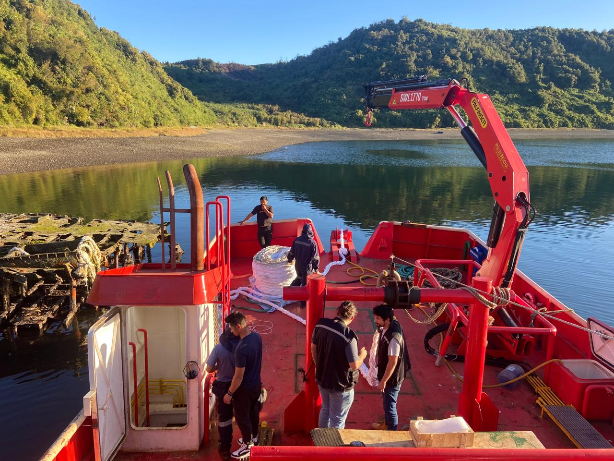
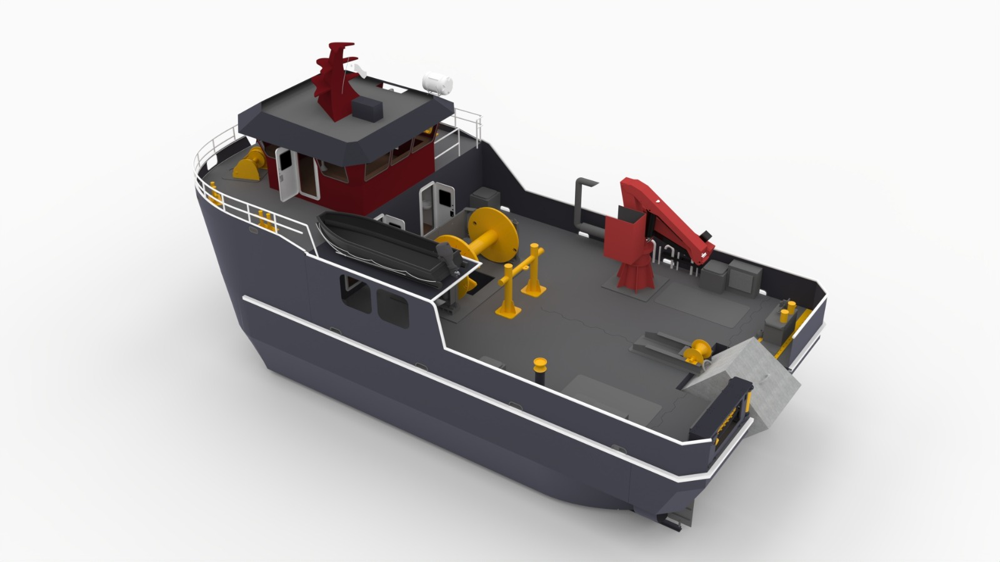
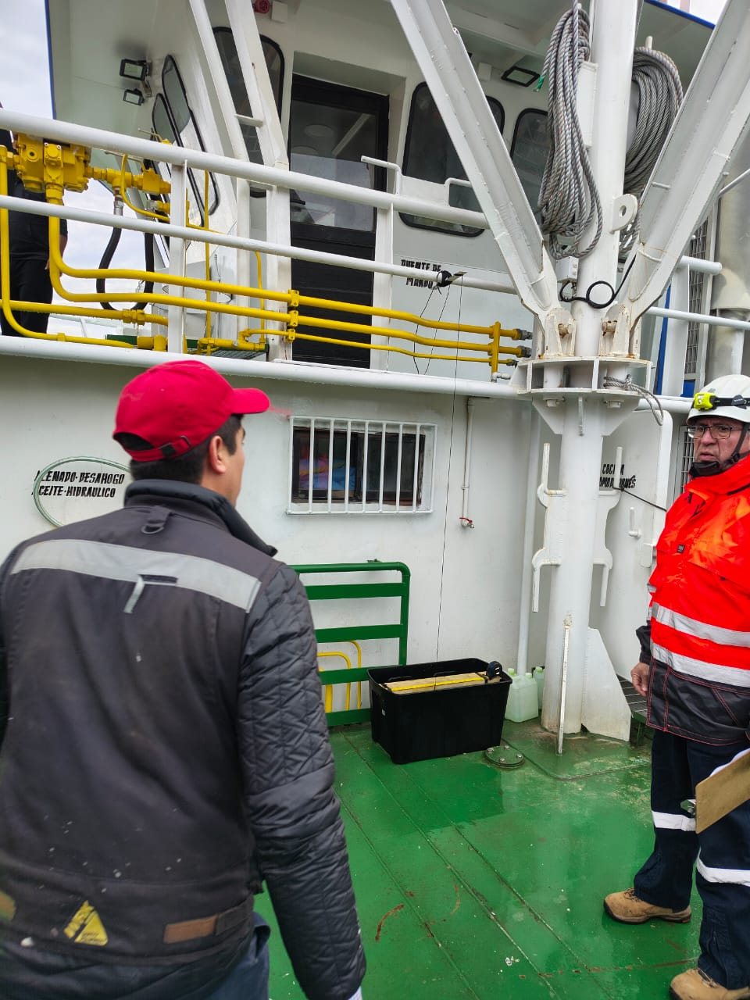
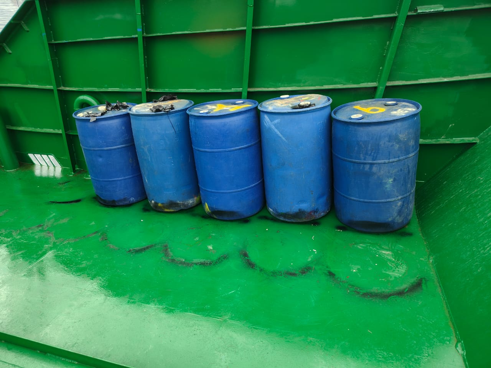
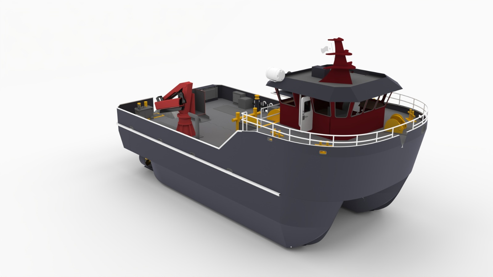

Proyecto 01
Catamarán multipropósito
Ingeniería estructural, planos constructivos y apoyo técnico para construcción.

Ingeniería naval y operaciones marítimas
Diseño, cálculo, certificación, inspección y apoyo en terreno para embarcaciones, artefactos navales y centros de cultivo.
Quiénes somos
CAUVA desarrolla soluciones integrales para proyectos marítimos, combinando diseño, cálculo, documentación técnica, inspección y apoyo operacional.
Acompañamos cada proyecto desde la definición conceptual hasta la construcción, regularización, certificación y ejecución en terreno.

Servicios
Selecciona un área para ver su alcance.
Desarrollo técnico para embarcaciones y artefactos navales.

Respaldo documental para construcción, certificación y operación.

Evaluación y respaldo técnico para equipos y estructuras.

Evaluación técnica para conocer la condición real de equipos y estructuras.

Planificación y respaldo técnico para maniobras seguras.

Proyectos
Ingeniería y participación técnica en proyectos reales.
Ingeniería estructural, planos constructivos y apoyo técnico para construcción.

Ingeniería naval, documentación técnica y habilitación operacional.

Apoyo en terreno, análisis de registros ROV e informe técnico.
Caso de éxito
Determinación de parámetros para evaluación de estabilidad.
Preparación, distribución y desplazamiento de pesos de prueba, registro de mediciones y elaboración del respaldo técnico correspondiente.




Modelado 3D
Visualización, definición estructural y desarrollo técnico para facilitar fabricación, revisión y toma de decisiones.


Ingeniería naval, certificación, inspecciones y operaciones marítimas.